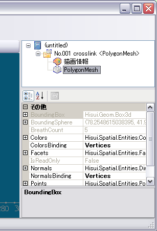
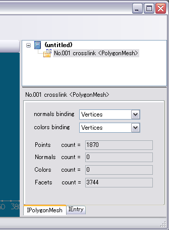

従来：IBuild は IBreath を直接継承していた。
namespace Hisui.Core {
public interface IBreath { ... }
public interface IBuild : IBreath { IEnumerable<IBreath> Sources { get; } void Build(); }
}
修正後：継承関係の間に IDependent が挿入された。
namespace Hisui.Core {
public interface IBreath { ... }
public interface IDependent : IBreath { IEnumerable<IBreath> Sources { get; } }
public interface IBuild : IDependent { void Build(); }
}
IDependent は依存関係（Sources）だけを持っていてビルド処理（Build()）は持っていないインターフェイス。 下記のインターフェイスは IBuild の代わりに IDependent を継承するものとして定義が変更された。
Hisui.OpenGL.HiGLを利用してシェーダーを適用する方法。
using Hisui.OpenGL;
var program = HiGL.CreateProgramObject( vertexShaderSource, fragmentShaderSource );
using ( var use = program.Use() ) {
use.Uniform( "foo", 123 );
scene.Draw( sc );
}
シェーダーをプラグインする方法。
[Hisui.Graphics.ShaderProgram]
class MyShader : Hisui.Graphics.ShaderProgram
{
public MyShader()
: base( vertexShaderSource, fragmentShaderSource )
{ }
public override void SetParams( Hisui.OpenGL.HiGL.IProgramUse use, Hisui.Graphics.ISceneContext sc )
{
use.Uniform( "foo", 123 );
}
}
XAMLコードは、まず下記のようにネームスペースを宣言。
<Window
...
xmlns:h="http://www.quatouch.com/products/hisui" >
ヒスイのビューを載せるのは次のように書くだけ。
<h:GLDocViewControl Name="view"/>
MenuItem の Command にヒスイの "File.Open" コマンドを関連付ける場合は次のように書く。
<MenuItem Command="{h:CommandBinding 'File.Open'}"/>
namespace Hisui.Spatial
{
public interface IPolygonShell : ...
{
...
int GetNormal( IHalfEdge he );
void SetNormal( IHalfEdge he, int nid );
}
}
ヒスイのシリアライズ形式であるHIXフォーマットを拡張し、HOX(Hisui Object XML)フォーマットを新たに定義した。
つまり、ドキュメント全体ではなくて、オブジェクト単体をI/Oしたい場合に利用できる。
var obj = Hisui.Hix.HoxFormat.Import( filename ); // インポート Hisui.Hix.HoxFormat.Export( obj, filename ); // エクスポート
HIXと同じ。つまり、HIX形式用にシリアライザを定義すれば、それがそのままHOX形式用のシリアライザとして動作する。
"C:\Documents and Settings" にアプリケーションデータを保存する仕組みを用意。保存形式は上記のHOX形式。
Hisui.SI.ApplicationData クラスを利用する。ApplicationDataオブジェクトはHisui.SIクラスのスタティック・プロパティとして取得できる。下記の表にそのプロパティ名と対応する保存先フォルダを示す。
| プロパティ | 保存先フォルダ |
|---|---|
| CommonAppData | C:\Documents and Settings\All Users\Application Data\会社名\製品名\バージョン\ |
| UserAppData | C:\Documents and Settings\ユーザ名\Application Data\会社名\製品名\バージョン\ |
| LocalUserAppData | C:\Documents and Settings\ユーザ名\Local Settings\Application Data\会社名\製品名\バージョン\ |
class Hoge { ... }
class HogeSerializer : Hisui.Hix.ISerializer { ... }
Hisui.SI.UserAppData.Add( typeof( Hoge ), hoge );
Hisui.SI.SaveAppData();
下記のように、型をキーとして単に Get() すればよい。
var hoge = Hisui.SI.UserAppData.Get<Hoge>();
この関数は、すでに読み込み済みの場合にはそのオブジェクトを返し、まだ読み込まれていない場合にはその場でデータを読み込む。その読み込みにも失敗した場合には null を返す。
現在のカルチャに合わせて特定の config.xml を読み込む機能を追加。
この config.xml は、アプリケーション実行ファイルがあるフォルダに en/ や en-US/ などカルチャ名のフォルダを作成し、その中に作成する。するとこの config.xml は、カルチャが英語の場合にのみ読み込まれるファイルとなる。
config.xml を用いてコマンドの表示名などを設定できるので、たとえば英語カルチャ専用の config.xml を用意してそこにコマンドの英語表記を設定すれば、メニュー文字列等の英語化が可能となる。
現在、拡張メソッドが定義されているのは下記の static class。
これらはすべて、冒頭に using Hisui を記述することで拡張メソッドとして利用可能。今回は特に SpatialUT の拡張メソッドを増強した。
下記のクラスを Obsolete （非推奨）とした。
代わりに、下記のクラスを新たに導入した。
例えば *.hoge フォーマットのインポート/エクスポート機能を作成したい場合には、次のようなコードを記述すればよい。これによりヒスイのインポートメニューに *.hoge フォーマットが追加される。
[Hisui.Hix.Format( "Hoge format", "hoge" )]
public static class HogeFormat
{
[Hisui.Hix.Import( typeof( HogeFormat ) )]
public static HogeEntity Import( System.IO.TextReader reader )
{
// reader から HogeEntity をインポート
}
[Hisui.Hix.Export( typeof( HogeFormat ) )]
public static void Import( HogeEntity entity, System.IO.TextWriter writer )
{
// writer へ HogeEntity をエクスポート
}
}
Hisui.Gui.dllにMainForm2クラスを新規追加し、こちらを標準とした。以前のMainFormではPropertyGridを利用していたため開発者以外の一般ユーザーには分かりにくいインターフェイスであったが、MainForm2では各エンティティごとにプロパティ画面をカスタマイズしてプラグインすることが出来る。
| 変更前（MainFormクラス） | 変更後（MainForm2クラス） |
|---|---|
|  |  |
プロパティ画面のプラグインは、下記のようなコードで実現できる。
[Gui.PropertyControl( typeof( IPolygonMesh ) )]
public partial class PolygonMeshPropertyControl : Gui.PropertyControl
{
public PolygonMeshPropertyControl()
: base( new Property() ) // 内部クラス Property のインスタンスを親クラスに渡す
{
InitializeComponent();
...
}
// 内部クラスを作成
class Property : AbstractProperty<IPolygonMesh, PolygonMeshPropertyControl>
{
protected override bool IsEqualTo( IPolygonMesh target )
{
// target とプロパティ画面の表示が一致しているかどうかを返す
}
protected override void CopyFrom( IPolygonMesh target )
{
// target の内容をプロパティ画面にコピー
}
protected override void CopyTo( IPolygonMesh target )
{
// プロパティ画面の内容を target にコピー
}
public override void Initialize()
{
// 初期化。主にイベントハンドラの設定を行う。
// 例えば、画面に変更が合った場合には base.Commit() を呼び出す、など。
}
}
}
ヒスイは内部で LINQ の機能を利用しているため、本来は .NET Framework 3.5 が必要となる。しかし、LINQ の仕様のためだけに .NET Framework 3.5 のインストールをユーザーに強いるのは負担になる場合があると考え、.NET Framework 2.0 でも動作するバージョンを用意した。
.NET Framework 2.0 でも LINQ が動作するようにするためには、System.Core.dll に定義されている System.Linq.Enumerable クラスなどが用意できれば良い。この System.Core.dll のソースコードが Mono プロジェクトのソースリポジトリから取得できる。
http://anonsvn.mono-project.com/
ヒスイ1.8 では、Monoプロジェクトからソースコードを取得してSystem.Core.dllをビルドし、これを同梱した。なお、Monoプロジェクトではクラスライブラリは MIT X11 ライセンスで配布されており、無償で無制限に利用が可能である。Monoプロジェクトに感謝の意を表したい。
参考：FAQ: Licensing - Mono
hixファイルの読込において、従来は XmlReader クラスの ReadToFollowing() メソッドを多用していたが、より厳密な読み込み処理とするために ReadToNextSibling() メソッドを使用するように変更した。この影響により、従来のヒスイでは問題なく動作していたシリアライザが、ヒスイ1.8では正しく動作しなくなる場合が考えられる。この問題は以下のいずれかの対策により解決できる。
なお、今後は Hisui.Hix.Util.Read()/Write() よりも、Hisui.HixUT に定義された拡張メソッド群 ReadHixData()/WriteHixData() などの使用を推奨とする。
IEntry.Enabled プロパティを false に設定すると下記の動作となる。
使い道としては次のような状況が考えられる。
あるエンティティを非表示にした場合、それだけではそのエンティティはビルドグラフからは外されないため、何らかの編集が加わった際にはそのエンティティのビルド処理が走ってしまう。このビルド処理が計算時間を要するものだった場合、ユーザーは画面に表示されていないエンティティのビルド処理を待たされることになるため、ストレスを感じることになるだろう。この問題は IEntry の Enabled プロパティを false に設定することで回避することが出来る。
Hisui.Ctrl.IOperation を実装するためのベースクラスとして Hisui.Ctrl.Operation クラスを新規追加した。さらに、MouseOperation クラスなどのマウス操作オペレーションをこの Operation クラスの派生クラスとして定義しなおした。
この Operation クラスには WorldScenes や ForgroundScenes などのシーンを登録するプロパティが備わっており、そのオペレーションが有効な間だけ描画される一時的なシーンを登録できるようになった。
Hisui.Graphics.OpenGL.GLViewControl を Hisui.Graphics.GLViewControl に変更した。
前回のリリースで非推奨とした下記のプロパティを、完全に削除した。
今後は Items の代わりに Entries プロパティを、ActiveItems の代わりに ActiveEntries プロパティを使用すること。
今までは一部で GLUT32.DLL を利用していたが、GLUT32.DLL は 64bit で動作しないという問題があった。そこで、GLUTを使用していた箇所は C# による自前の実装を用意することで GLUT32.DLL への依存を回避した。これにより、弊社におけるテストでは 64bit の環境でも動作することが確認された。
下記のコードでメニューのチェック状態を制御可能にした。
[Hisui.Ctrl.Command]
static void Hoge( ..., Hisui.Ctrl.CommandOption opt )
{
if ( opt.QueryRunnable ) {
opt.QueryRunnable = ...; // [true/false] メニューの Enable/Disable 状態を設定
opt.IsChecked = ...; // [true/false] メニューのチェック状態を設定
return;
}
// コマンド本体の処理
...
}
Hisui.Graphics.MaterialDecoration に BackMaterial プロパティを追加し、裏面にもマテリアルを設定可能にした。裏面マテリアルを使用する際には、MaterialDecoration の UseBackMaterial プロパティを true 設定する必要がある。
using Hisui; // 拡張メソッドの使用にはコレが必要 ... entry.SetMaterial( material ); entry.SetVisible( false ); var scene = entry.GetScene();
今まではOpenGLの関数を直接呼ぶしか方法がなかったが、より便利に描画できる機能を追加した。例として、点 p1, p2, p3, p4 を結ぶ赤い折線を描画するコードを下記に示す。
void Draw( Hisui.Graphics.ISceneContext sc )
{
Hisui.Geom.Point3d p1, p2, p3, p4;
using ( var scope = sc.Push() ) {
scope.Color = Color.Red;
sc.DrawLineStrip( gl => gl.Vertices( p1, p2, p3, p4 ) );
}
}
sc.Push() を呼ぶと Hisui.Graphics.IScope オブジェクトが生成され、このオブジェクトは IDisposable を実装しているため using() 文の中で使用する。すると、その using スコープ内での属性変更（色、線種、線幅、etc）はそのスコープ内に限定され、using を抜けた後は元の属性値に戻る。この例で言えば、scope.Color = Color.Red という設定は using スコープ内に限定されるため、using を抜けた後は GL_CURRENT_COLOR は元に戻るのである。
sc.DrawLineStrip() を使用すると、glBegin( GL_LINE_STRIP ) 〜 glEnd() による描画が可能である。引数としてデリゲート（ラムダ式）を渡し、そのデリゲート内で折線の頂点列を指定する。渡すデリゲートは Hisui.OpenGL.HiGL.IBeginEnd 型の引数を一つ受け取る関数である。
別の例として、三角形を一枚描画するときには次のように記述できる。
sc.DrawTriangles( gl =>
{
gl.Normal( 0.0, 0.0, 1.0 );
gl.Vertex( 0.0, 0.0, 0.0 );
gl.Vertex( 1.0, 0.0, 0.0 );
gl.Vertex( 0.0, 1.0, 0.0 );
} );
Hisui.Geom に下記の ILocal3d インターフェイスを追加した。
namespace Hisui.Geom
{
public interface ILocal3d
{
CodSys3d CodSys { get; set; }
}
}
これを実装するエンティティは、局所座標系 CodSys に定義されたオブジェクトと認識される。したがって、これを実装するエンティティはその局所座標系に座標変換した位置に描画される。
更に、これを利用して Hisui.Spatial に下記のエンティティを定義した。
namespace Hisui.Spatial
{
public interface ILocal : Geom.ILocal3d, IGeometry
{
Geom.IBoundary3d Object { get; }
}
public interface ILocal<T> : ILocal where T : Geom.IBoundary3d
{
new T Object { get; }
}
}
ILocal オブジェクトは、Hisui.Spatial.Factory.CreateLocal() 関数で生成できる。例えば IPolygonMesh を局所座標系に入れたい場合には次のようにすればよい。
var mesh = Hisui.SI.NewInstance<Hisui.Spatial.IPolygonMesh>(); var localMesh = Hisui.Spatial.Factory.CreateLocal( mesh ); localMesh.CodSys = new Hisui.Geom.CodSys( ... );
ヒスイの開発環境を下記に移行したので、同様の環境を推奨とする。
Hisui.Core.IEntryCollection に関して次の変更をした。
従来の IEntryCollection は IStorage<IEntry> の派生として定義されていたことにより、下記の問題があった。
以上の問題を解消するために、IEntryCollection を次のように定義し直した。（変更された箇所のみ掲載）
public interface IEntryCollection
: IEnumerable<IEntry> // IEnumerable<IEntry> を継承
{
IEntry Put( object entity ); // Put() は IEntry を返す
IEntry Put( int id, object entity ); // Put() は IEntry を返す
...
}
なお、CsGL を取り除いても 64bit 対応にはまだ問題が残っており、現状のヒスイは64bit環境では動作しない。
下記の構造体を Hisui.Graphics から Hisui.Geom へ移動した。
従来はプラグインの読込順序が制御できなかったため、例えばメニューの並ぶ順序が環境ごとに異なってしまうなどの不具合があった。
そこで各プラグイン用の属性クラスに Order プロパティを新規追加し、Order の値で昇順にソートしてプラグインを読み込むようにした。 例えば次のように記述することでメニューの順序を制御することができる。
[Hisui.Ctrl.Command( Order = 100 )]
static class Menu1
{
[Hisui.Ctrl.Command( Order = 10 )]
static void Fizz( ... ) { ... }
[Hisui.Ctrl.Command( Order = 20 )]
static void Buzz( ... ) { ... }
}
[Hisui.Ctrl.Command( Order = 200 )]
static class Menu2
{
[Hisui.Ctrl.Command( Order = 50 )]
static void Foo( ... ) { ... }
[Hisui.Ctrl.Command( Order = 40 )]
static void Bar( ... ) { ... }
}
Order 値の指定を省略すると、デフォルトで uint.MaxValue が設定される。つまり、値が省略されたプラグインは最後尾に回される。
Hisui.Geom.dll モジュールに Hisui.GeomUT クラス（静的クラス）を新規作成。C#3.0 の新機能 extension method を利用して、点やベクトルのシーケンスに対するユーティリティ関数を提供する。
Hisui.Core.dll モジュールに Hisui.CoreUT クラス（静的クラス）を新規作成。C#3.0 の新機能 extension method も利用して、Storage のためのユーティリティ関数などを提供する。
代わりに Hisui.Core.UT クラスは隠蔽した。
法線ベクトルつきの obj ファイル出力に間違いがあったので修正。
今までは [Hisui.Ctrl.Command] 属性により static 関数のみがコマンドとして登録できた。この機能を拡張し、インスタンスメソッドでもコマンドとして登録できるようにした。その場合、ターゲットオブジェクトは this となる。
同様に、[Hisui.Ctrl.Handler] 属性によりインスタンスメソッドもハンドラとして登録できるようにした。
Hisui.Core に Progress、IProgress を新規追加し、代わりに Ctrl.Progress を削除した。
次のように使用することで、プログレスを通知することが出来る。
using ( Hisui.Core.IProgress progress = Hisui.SI.StartProgress( "処理中" ) ) {
int stepcount = 10;
for ( int i = 0 ; i < stepcount ; ++i ) {
progress.Step( 1.0 / stepcount ); // １ステップ辺りの重みを通知
// 処理ステップ
}
}
using(){...} の中で別の関数を呼び出す場合には SI.PushProgress() を使用する。
void Hoge()
{
using ( Hisui.Core.IProgress progress = Hisui.SI.PushProgress() ) {
...
}
}
using ( Hisui.Core.IProgress progress = Hisui.SI.StartProgress( "処理中" ) ) {
progress.Step( ... );
Hoge(); // 別の関数を呼び出す
}
今までは ToolStrip の更新（ICommand.IsRunnable() によるメニューの enable/disable など）をビルドグラフで行っていたが、ビルドグラフでは行わないようにした。そのため、アプリケーション開発者は次の箇所に Hisui.SI.UpdateToopStrips() を追加する必要がある。
要素を選択したときのハイライト描画をプラグイン可能にした。
Hisui.Graphics.IHighlight の実装クラスをプラグインする。HighlightAttribute 属性の付いたハイライトクラスを定義しておくと、プラグインとして HighlightFactory にロードされるようにした。使い方はシーンのプラグインと同様。
[Hisui.Graphics.Highlight( typeof( HogeEntity ) )]
class HogeEntityHighlight : Hisui.Graphics.IHighlight
{
public void PreHighlight( Hisui.Core.IEntry entry, Hisui.Graphics.ISceneContext sc )
{
...
}
public void PostHighlight( Hisui.Core.IEntry entry, Hisui.Graphics.ISceneContext sc )
{
...
}
}
マルチビュー（複数のビューを使用）に対応するための修正を行った。
例えば LButtonClick のコンストラクタ引数に IContext.Events を入れるとマルチビュー対応となる。
[Hisui.Ctrl.Command]
static IEnumerator<Hisui.Ctrl.IOperation> コマンド関数( ..., Hisui.Ctrl.IContext con )
{
// シングルビュー（今アクティブなビュー）
Hisui.Ctrl.LButtonClick click1 = new Hisui.Ctrl.LButtonClick( con.View.Events );
// マルチビュー
Hisui.Ctrl.LButtonClick click2 = new Hisui.Ctrl.LButtonClick( con.Events );
}
メンバ red, green, blue を R, G, B に名称変更した。System.Drawing.Color に合わせるため。
Hisui.Spatial の IPointCloud や IPolygonMesh に色情報を持てるようにした。
STLアスキーフォーマットでの不具合修正。
マウス中ボタンのドラッグによる矩形ズームを修正。矩形の中心に物体がないと正しくズームされないという不具合を修正した。また、矩形の中に要素が全く含まれない場合には、ズーム操作がキャンセルされるようにした。
Hisui.Spatial.Factory クラスを作成し、オブジェクトを生成するメソッドを Factory クラスに集約するようにした。
代わりに Hisui.Spatial.Misc.CalcPolygonNormal() を用いること。
代わりにインターフェイス ICurveStorage, ISurfaceStorage を作成した。これらのインスタンスを生成するときは、次のように Hisui.Core.Factory を使用すること。
string FileExtension { get; } を string[] FileExtensions { get; } に変更した。同じファイル形式でも複数の拡張子を用いる場合があるため。（例：HTMLは *.html と *.htm の2つが用いられる）
Hisui.Ctrl モジュールにイベントハンドラの仕組みを作成した。大まかな構造はコマンド周辺と似ており、異なるのはメニューからではなくイベントから起動される点である。
| Hisui.Ctrl.IHandler | イベントハンドラのインターフェイス |
| Hisui.Ctrl.HandlerRegistry | IHandler を格納する static class |
| Hisui.Ctrl.HandlerLoader | ハンドラをプラグインモジュールからロードするクラス |
| Hisui.Ctrl.HandlerAttribute | この属性が付与されたメソッドがハンドラとしてプラグインされる。 |
この機構の使い方は、「Hisuiチュートリアル / 直線エンティティを自作してみよう (2)」の「直線の端点移動」を参照。
Hisui.Config.dll は削除。従来の Hisui.Config.ConfigLoader の代わりに、下記のHisui.SI関数を使用すること。
まず、下記クラスはHisui.Spatial.Utilから削除した。
その後、Hisui.Spatial.Util は Hisui.Spatial.Formats と名称変更。 結果として、Hisui.Spatial.Formats.dll には下記のファイルフォーマット入出力のみが含まれている。
SI とは Service Interfaces の略称。 ヒスイの頻繁に使用される機能を薄くラップした関数群。つまりヒスイのFacade（ファサード）クラス。 下記のようにSIクラスの中にstatic関数群をフラットに並べて提供する。
namespace Hisui
{
public static class SI
{
public static void SetUp( string cfgPath ) { ... }
....
}
}
SIはヒスイのクラス構造を深く理解していなくても簡単に利用できるようにするための関数群。 特に IronPython からヒスイの機能を呼び出すときにはこのようなフラットな関数群のほうが便利だと思われる。
IView に SceneGraph プロパティが追加され、代わりに下記のプロパティは削除した。
例えば view.WorldScenes と記述していた箇所は view.SceneGraph.WorldScenes に変更すること。
Builder に Progress イベントを追加。Run() や RunRebuild() でビルドの進捗状況をイベントで通知するようにした。
| 新メソッド | 旧メソッド名 | 意味 |
|---|---|---|
| Run() | 新規 | プログレスイベント付きの全体ビルド |
| RunRebuild() | 新規 | プログレスイベント付きの全体リビルド |
| Build() | Run() | プログレスイベントなしの全体ビルド |
| Rebuild() | Rebuild() | プログレスイベントなしの全体リビルド |
| Build( IBuild ) | Run( IBuild ) | プログレスイベントなしの部分ビルド |
| Rebuild( IBuild ) | Rebuild( IBuild ) | プログレスイベントなしの部分リビルド |
セレクションの仕組みは大きく変更した。
Hisui.Graphics.ISceneObject インターフェイスを追加。ISceneObject の単位でピックする。 ISceneObject は次の3つをパックしたもの。
namespace Hisui.Graphics
{
public interface ISceneObject
{
Core.IEntry Entry { get; }
IScene Scene { get; }
object Value { get; }
bool Highlight { get; set; }
}
}
次のように HitObject プロパティでピックした ISceneObject が取得できるようにした。
namespace Hisui.Ctrl
{
public struct Pick
{
public Graphics.ISceneObject HitObject { get; }
public Geom.Point3d HitPosition { get; }
public static Pick Entity<T>( Graphics.IView view, Geom.Point2i pt ) { ... }
public static Pick[] Entities<T>( Graphics.IView view, Geom.Box2i box ) { ... }
public static Pick Entry( Graphics.IView view, Geom.Point2i pt ) { ... }
public static Pick[] Entries( Graphics.IView view, Geom.Box2i box ) { ... }
}
}
| Hisui.Ctrl.LButtonPickBase | 次の2つのクラスのベースクラス |
| Hisui.Ctrl.LButtonPick | エントリのピック |
| Hisui.Ctrl.LButtonPick<T> | T型エンティティのピック |
ピックした ISceneObject は HitObject プロパティで取得できる。
Copyright © 2010, 株式会社カタッチ
http://www.quatouch.com